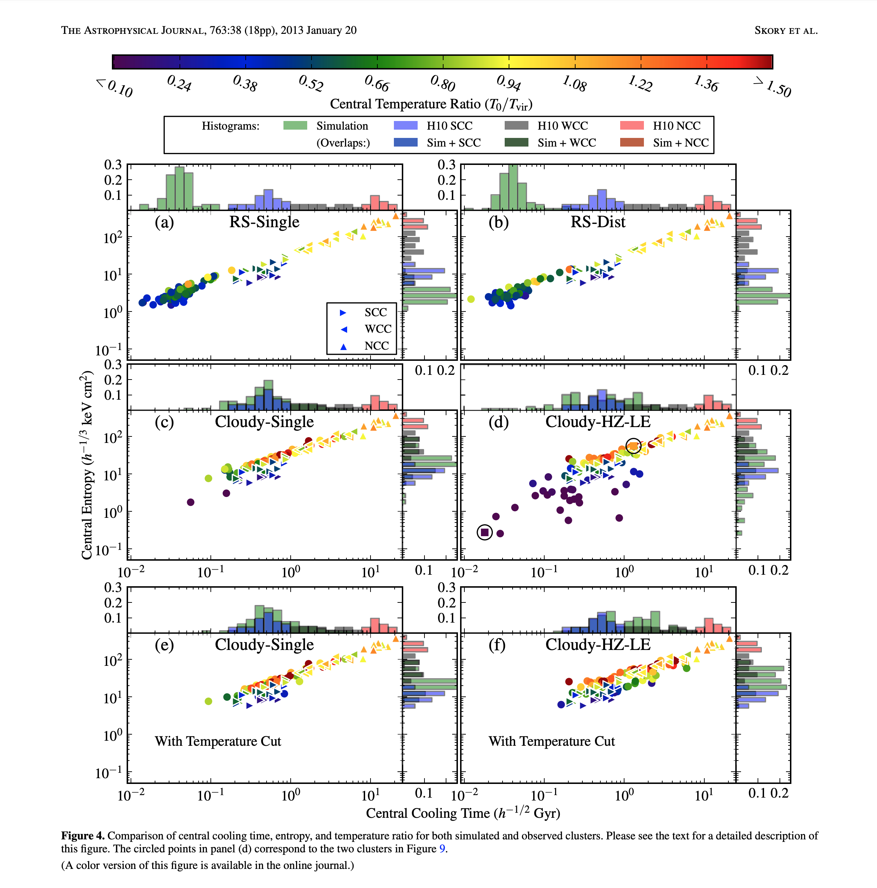

<!doctype html>
<html>
  <head>
<meta charset="utf-8">
<meta name="viewport" content="width=device-width, initial-scale=1.0, maximum-scale=1.0, user-scalable=no">

<title>Lecture 7, Part 1 - Data and Viz basics, more on widgets</title>

<link rel="stylesheet" href="https://cdnjs.cloudflare.com/ajax/libs/reveal.js/3.6.0/css/reveal.css">
<link rel="stylesheet" href="https://cdnjs.cloudflare.com/ajax/libs/reveal.js/3.6.0/css/theme/white.min.css">
<link rel="stylesheet" href="https://maxcdn.bootstrapcdn.com/font-awesome/4.5.0/css/font-awesome.min.css">

<!-- Theme used for syntax highlighting of code -->
<link rel="stylesheet" href="https://cdnjs.cloudflare.com/ajax/libs/highlight.js/9.12.0/styles/github.min.css">
<link href="https://fonts.googleapis.com/css?family=Questrial" rel="stylesheet">

<!-- Printing and PDF exports -->
<script>
    var link = document.createElement( 'link' );
    link.rel = 'stylesheet';
    link.type = 'text/css';
    link.href = window.location.search.match( /print-pdf/gi ) ?  '/revealjs/css/print/pdf.css' : '/revealjs/css/print/paper.css';
    document.getElementsByTagName( 'head' )[0].appendChild( link );
</script>
<script src="https://cdnjs.cloudflare.com/ajax/libs/reveal.js/3.6.0/lib/js/head.min.js"></script>
<script src="https://cdnjs.cloudflare.com/ajax/libs/reveal.js/3.6.0/js/reveal.min.js"></script>


<style type="text/css">
.reveal section.present {
  text-align: left;
}
.centered {
  text-align: center;
}
.reveal {
  font-size: 30px;
  font-family: 'Questrial', sans-serif;
}
.reveal section img {
  box-shadow: none;
  border: 0px;
  display: block;
  margin-left: auto;
  margin-right: auto;
}
.reveal bigtext {
  font-size: 800%;
}

.reveal h1, .reveal h2, .reveal h3 {
  text-transform: none;
}

.reveal .titleslide h1 {
  text-align: center;
}
.reveal .titleslide h2 {
  text-align: right;
}

.vertical_center section {
  vertical-align: middle;
}

.left_abs {
  left:0%;
  text-align: left;
  float: left;
  width:50%;
  z-index:-10;
}

.left {
  left:-8.33%;
  text-align: left;
  float: left;
  width:50%;
  z-index:-10;
}

.right {
  left:31.25%;
  top: 75px;
  float: right;
  text-align: right;
  z-index:-10;
  width:50%;
}

.reveal table td {
  text-align: left;
  padding: 0.2em 0.5em 0.2em 0.5em;
  border: solid; 
}

.reveal table tbody tr:last-child th,
.reveal table tbody tr:last-child td {
  border-bottom: solid; }

.reveal .table-hl {
  background: #aaa;
}


</style>
  </head>

  <body>
    <div class="reveal">
      <div class="slides">
        <section data-markdown
           data-separator="^\n---\n"
           data-separator-vertical="^\n----\n"
           data-separator-notes="notes?:"
           >
          <script type="text/template">
## Warm-Up Activity

1. What is the visualization trying to show?
1. What are its methods?
1. What are the strengths / weaknesses?

</br>
 * https://zzzev.com/movies

---

## This lecture

 * Data organization (quick)
 * Doing stuff with data
 * Dimensions of representation

</br>
</br>

## If time permits

 * Linked data
 * Grammar of Graphics
 * bqplot and dashboarding

---

# Data organization: A few notes

---

<!-- .slide: data-background-image="images/viz_diagram.svg.png" data-background-size="contain"-->

notes: Today we are going to discuss different sorts of data formats.

---

<!-- .slide: data-background-image="images/viz_diagram2.svg.png" data-background-size="contain"-->

notes: Usually we are going to be
able to make use of readers

---

<!-- .slide: class="two-floating-elements" -->

## Files, Data, and Organization

* Text
  * <span style="color:red">ASCII (raw)</span>
  * <span style="color:red">CSV / TSV</span>
  * JSON
* Binary
  * HDF5
  * PNG/BMP/GIF/JPG/etc
  * Excel
  * Arrow
* Query-based
  * SQL
  * JSON/REST

<div class="right" markdown=1>

<!---->


<!---->


</div>

notes:

we are predominatley using ASCII and CSV files in this class which is basically files with letters and numbers in rows and columns, but its worth mentioning that there *many* other ways data can be stored like in binary files to compress storage space or file formats that are ment for accessing a bunch like query-based file systems

read-write operations from disk are extremely time consuming, so raw text files come with massive overhead

REST = REpresentational State Transfer - web architecture that keeps clients and servers independent and queries using flexible JSON formatting.

---

## Doing Stuff with Data

Now that we understand a few ways that data can be stored, let's do some things
to it.

---

# Doing stuff with data

---

<div class="left">
<!-- .element: style="height: 20em;" -->
</div>

<div class="right" style="font-size: 150%;">
<div style="height: 4.0em;"></div>
You have a palette of operations to apply.
</div>

---

## Filtering Operations

 * Relationships:
   * Equality, inequality
   * Quantitative value (less than, greater than)
   * Intersection, disjoint
 * Subsampling
   * Regular sampling
   * Randomized sampling
   * Nyquist frequency
 * Related data queries
   * Queries on other columns at fixed row location
   * External membership queries

notes: these are a lot of fancy words, but essentially we've already done this before - when we only plotted the eccentricity from the kepler data?  That was plotting a sort of equality

we also subsampled our data to make movies

---

## Relationships Examples

 * Equality
   * Identity
   * Quantitative values
 * Ordering or quantitative
   * Less than (or equal)
   * Greater than (or equal)
   * "Comes before" and "Comes after"
 * Set-based operations
   * "Is a member"
   * "Is not a member"
   * "Shares members"
   * "Shares no members"

---

## Examples

### Equality

```
value == "hello"
value == 10
```

### Ordering and Quantitative

```
value < 30
value > July 1, 2010
```

### Set-Based

```
value in ("red", "blue")
value not in (3.141, 2.7)
```

notes: again, these are a lot of fancy words, but we've already done this a lot before

we've done things based on equality and inequity in if-then statements

---

## Examples

### Equality

```
value == "hello"
value == 10
```

### Ordering and Quantitative

```
value < 30
value > July 1, 2010
```

### Set-Based

```
value in ("red", "blue")
value not in (3.141, 2.7)
```

We will often *mask* data to select just what we want to show.

notes: there are various ways to talk about it, but I usually use the term "masking" to talk about 

we'll do some quick examples

---

<br />
<br />
<br />

# Dimensions of representation

i.e. how can we represent data in visualizations?

---

## Representing Quantities

We can encode the values associated with a data point by modifying how we
express it.  To do so, we need to be able to identify the different components
of representation, and how we can scale between them.

---

## Dimensions of Representation

Given a single datum on a visualization, we can control several different
components of its representation.

 * Position

<!-- .slide: data-background-image="images/dimensions_1.svg" data-background-size="auto 50%" data-background-position="right 20% bottom 50%"-->

---

## Dimensions of Representation

Given a single datum on a visualization, we can control several different
components of its representation.

 * Position
 * Color

<!-- .slide: data-background-image="images/dimensions_2.svg" data-background-size="auto 50%" data-background-position="right 20% bottom 50%"-->

---

## Dimensions of Representation

Given a single datum on a visualization, we can control several different
components of its representation.

 * Position
 * Color
 * Size

<!-- .slide: data-background-image="images/dimensions_3.svg" data-background-size="auto 50%" data-background-position="right 20% bottom 50%"-->

---

## Dimensions of Representation

Given a single datum on a visualization, we can control several different
components of its representation.

 * Position
 * Color
 * Size
 * Shape

<!-- .slide: data-background-image="images/dimensions_4.svg" data-background-size="auto 50%" data-background-position="right 20% bottom 50%"-->

---

## Dimensions of Representation

Given a single datum on a visualization, we can control several different
components of its representation.

 * Position
 * Color
 * Size
 * Shape
 * Relationship

<!-- .slide: data-background-image="images/dimensions_5.svg" data-background-size="auto 50%" data-background-position="right 20% bottom 50%"-->

---

## Dimensions of Representation

Given a single datum on a visualization, we can control several different
components of its representation.

 * Position
 * Color
 * Size
 * Shape
 * Relationship
 * Motion

<!-- .slide: data-background-image="images/dimensions_6.gif" data-background-size="auto 50%" data-background-position="right 20% bottom 50%"-->

---


<video width="1024" height="576" controls="controls">  
    <source src="./images/jeff.mp4"  />   
    <!-- <track src="subtitles_en.vtt" kind="subtitles" srclang="en" label="English"> -->     
    Nav doesn't support html5 video
</video>

Link - https://www.youtube.com/watch?v=kY-pUxKQMUE

---

[This plot](http://iopscience.iop.org/article/10.1088/0004-637X/763/1/38/meta#apj455166f4)
might be a bit too busy.



Article Link - https://iopscience.iop.org/article/10.1088/0004-637X/763/1/38

---

Someone on [Reddit](https://www.reddit.com/r/dataisugly/comments/8msftx/the_marvel_that_is_3d_stacked_scatter_pie_columns) designed a 3D Stacked Scatter Pie Column plot ... as an example of what not to do.


---

## Take away: think carefully about what you choose to add to your viz!

---

# Let's add another layer of complexity to our plots by adding in some interactivity in Python!

          </script>
        </section>
      </div>
    </div>
<script>
    // More info about config & dependencies:
    // - https://github.com/hakimel/reveal.js#configuration
    // - https://github.com/hakimel/reveal.js#dependencies
    Reveal.initialize({
        dependencies: [
            { src: 'https://cdnjs.cloudflare.com/ajax/libs/reveal.js/3.6.0/plugin/markdown/marked.js' },
            { src: 'https://cdnjs.cloudflare.com/ajax/libs/reveal.js/3.6.0/plugin/markdown/markdown.min.js' },
            { src: 'https://cdnjs.cloudflare.com/ajax/libs/reveal.js/3.6.0/plugin/notes/notes.min.js', async: true },
            { src: 'https://cdnjs.cloudflare.com/ajax/libs/reveal.js/3.6.0/plugin/highlight/highlight.min.js', async: true, callback: function() { hljs.initHighlightingOnLoad(); } },
            { src: '/reveal.js-plugins/chalkboard/chalkboard.js' },
            { src: 'https://cdnjs.cloudflare.com/ajax/libs/reveal.js/3.6.0/plugin/math/math.min.js', async: true }
        ],
		keyboard: {
			67: function() { RevealChalkboard.toggleNotesCanvas() },	// toggle notes canvas when 'c' is pressed
			66: function() { RevealChalkboard.toggleChalkboard() },	// toggle chalkboard when 'b' is pressed
			46: function() { RevealChalkboard.clear() },	// clear chalkboard when 'DEL' is pressed
			 8: function() { RevealChalkboard.reset() },	// reset chalkboard data on current slide when 'BACKSPACE' is pressed
			68: function() { RevealChalkboard.download() },	// downlad recorded chalkboard drawing when 'd' is pressed
		},
        center: false,
        transition: 'none',
        backgroundTransition: 'none',
        showNotes: true,
        progress: false,
	slideNumber: true,

    });
</script>
  </body>
</html>

